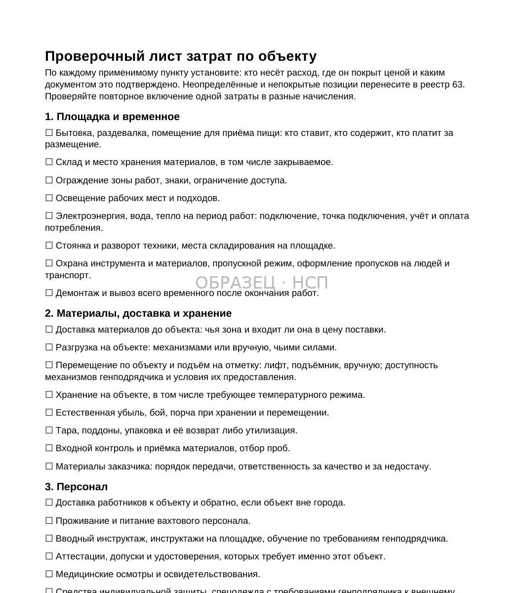
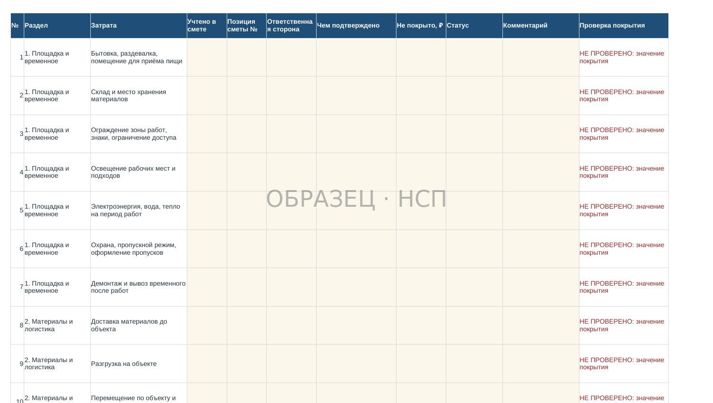
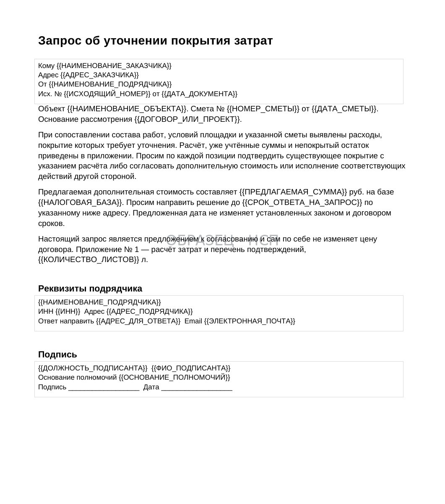
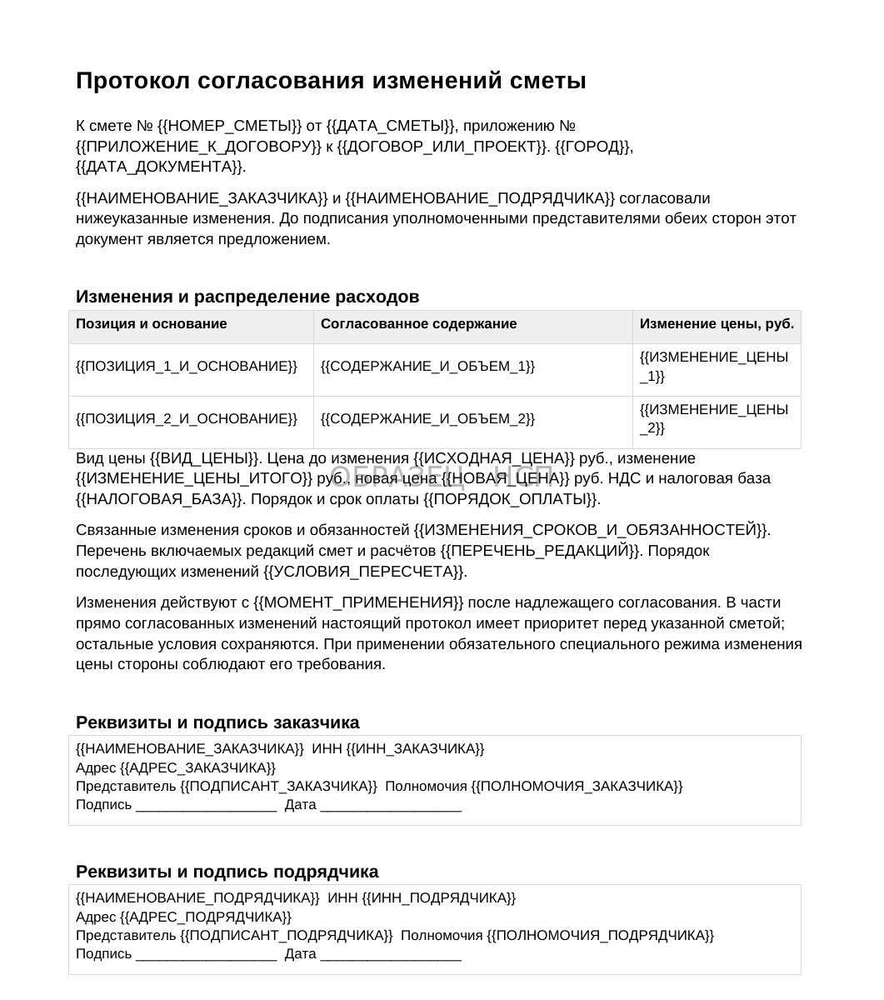

СМЕТА / ЦЕНА КОНТРАКТА
Проверка строительной сметы до подписания договора: какие затраты останутся за счёт подрядчика
Как выявить непокрытые расходы, проверить их наличие в расценках и начислениях, оценить влияние на плановую прибыль и согласовать цену до выхода на объект.
Субподрядчик получает смету, согласовывает объёмы и начинает работы. Позднее обнаруживаются расходы на временные сооружения, подъём материалов, электроэнергию, пропуска, испытания, уборку и исполнительную документацию.
Заказчик отвечает: «Всё включено в цену». Иногда это верно: расход уже учтён в расценке, ресурсе или накладных начислениях. Иногда конкретная операция не распределена между сторонами или её стоимость рассчитана неверно.
Отсутствие отдельной строки не доказывает отсутствия оплаты; наличие строки не всегда подтверждает полное покрытие фактических обязанностей. Поэтому задача — проверить необходимый расход, документальное покрытие и подтверждённый остаток. Такой остаток служит основой переговоров, но не становится автоматически долгом заказчика.
1. Сначала определите стадию договора и вид цены
Один и тот же расчёт имеет разные последствия до подписания договора и после начала исполнения.
До подписания можно предложить другую стоимость, изменить объём, распределить обязанности и согласовать условия площадки. После подписания право на изменение зависит от договора, типа цены и предусмотренных законом оснований.
Статья 709 ГК РФ допускает приблизительную и твёрдую цену. Если иное не оговорено, цена считается твёрдой.
Уточните, как она определена: общей суммой, утверждённой сметой, единичными расценками с переменными объёмами или иным согласованным способом.
Одновременно выясните, кто отвечает за электроэнергию, подъёмники, геодезию, расходные материалы и транспортировку. Без этого расчёт затрат будет оторван от договора.
2. Сверьте проект, смету, объёмы и регламенты площадки
Для проверки соберите действующие редакции рабочей документации, ведомости объёмов, договора, приложений, календарного графика, сметы и требований к организации работ.
Проверьте, что смета и переданная документация относятся к одной редакции проекта. Смету могли подготовить на более ранний объём, а затем изменить технологию, состав материалов или требования к испытаниям.
Сопоставьте основные и вспомогательные операции, единицы измерения и проектные объёмы. Фиксируйте конкретные номера листов, позиции ведомости и строки сметы.
Если объём не определён, укажите, кто и по какой процедуре его уточняет. Не записывайте произвольное значение ради заполнения таблицы.
Результат: перечень подтверждённых расхождений, а не общая фраза «смета неполная».
3. Отдельная строка — не единственный способ покрытия расхода
Расход может входить в стоимость ресурса, состав расценки, предусмотренные начисления или отдельную договорную обязанность заказчика.
Например, отсутствие самостоятельной позиции «уборка рабочего места» не означает, что подрядчик вправе немедленно предъявить дополнительную сумму. Проверьте состав работ, накладные расходы и условия договора.
Опасна и противоположная ошибка — предъявить один и тот же расход дважды: в цене материала и отдельным транспортным начислением.
По каждой позиции определяйте полную необходимую стоимость, уже учтённое покрытие и непокрытый остаток. Если покрытие подтверждено полностью, повторного начисления быть не должно.
4. Временные сооружения, электричество и содержание площадки
Проверьте бытовки, склады, ограждения, освещение, подключение к сетям, электроэнергию, воду, отопление и охрану материалов.
Кто предоставляет помещение для рабочих? Кто оплачивает потребление электричества и организацию точки подключения? Какие условия действуют для въезда грузового транспорта, пропусков и размещения техники?
Не забывайте о демонтаже временных решений, уборке после окончания этапа и возврате мест складирования.
При этом часть указанных расходов может быть уже учтена в расценках, накладных расходах или обеспечении генподрядчика. Для каждого пункта нужна ссылка на документ о покрытии.
5. Материалы, транспорт, разгрузка и подъём
Цена материала на складе поставщика не всегда равна его стоимости на рабочем месте.
Проверьте условия поставки, расстояние доставки, разгрузку, хранение, внутриплощадочное перемещение, подъём на отметку и необходимость ручных операций.
Если технику предоставляет заказчик, закрепите график, условия допуска, доступность механизма и последствия простоя.
Для материалов заказчика проверьте порядок передачи, входной контроль, хранение, ответственность за недостачу и документальное оформление списания.
Убедитесь, что транспорт и разгрузка не включены дважды в цену ресурса и отдельные начисления. До согласования дополнительных расходов нужно установить состав уже оплаченных операций.
6. Строительный мусор, испытания и исполнительная документация
Вывоз отходов включает несколько возможных операций: сбор, перемещение, погрузку, транспортировку, размещение и оформление подтверждений. Разные этапы могут выполнять разные стороны.
Проверьте, кто организует испытания, лабораторный контроль, геодезию, исполнительные схемы, акты и передачу документации.
Не каждая операция подлежит дополнительной оплате. Важно выяснить, включена ли она в основной объём, расценку, смету или договорный перечень обязанностей.
Неопределённость оформляйте запросом с конкретным документом и вопросом. Подробнее об одной категории расходов — в статье «Строительный мусор в смете».
7. Зимние затраты и временные здания
Зимняя работа может потребовать обогрева, укрытий, защиты материалов, изменения режима труда и дополнительных технологических мероприятий.
Разделяйте титульные и нетитульные временные сооружения, специальные вспомогательные решения и обычные обязанности организации производства.
Если применяются нормативы зимнего удорожания, проверьте территорию, период, метод, базу и состав покрытых расходов.
Нельзя считать любой зимний расход автоматически дополнительным только по факту низкой температуры. Но и наличие общего коэффициента не гарантирует покрытия всех мероприятий по конкретному проекту.
Для каждого расчёта сохраните исходные данные и документы, подтверждающие выбранный способ определения стоимости.
8. Накладные расходы, сметная прибыль и прибыль подрядчика
При определении сметной стоимости учитываются применимые правила начисления накладных расходов и сметной прибыли. Ориентиры — методика № 812/пр по накладным расходам и методика № 774/пр по сметной прибыли.
Эти документы изменялись в 2026 году. Для нормативного расчёта проверяйте действующую редакцию и дату применения.
Сметная прибыль как начисление в смете и плановая прибыль компании по объекту — разные величины.
Плановая прибыль подрядчика определяется его собственной финансовой моделью: выручкой, прямыми и косвенными расходами, условиями финансирования и рисками.
Именно плановую прибыль используйте для оценки того, какой экономический эффект дадут обнаруженные непокрытые расходы. Нельзя механически заменять её процентом сметной прибыли.
9. Проверочный лист из 62 вопросов
Действующий P13 содержит 62 вопроса по возможным расходам на объекте: площадка, материалы, организация работ, испытания, документы, отходы и другие категории.

Каждый применимый вопрос помогает определить ответственного, источник покрытия и подтверждающий документ.
Число вопросов не означает, что подрядчику нужно предъявить 62 самостоятельных требования.
Например, разгрузка, хранение и подъём материалов могут быть учтены внутри одного договорного комплекса. Необходимо исключать повторы и согласовывать только действительно непокрытый остаток.
Результат — список проверенных расходов, открытых вопросов и документально подтверждённых разногласий.
10. Excel-реестр: 51 строка и обязательная проверка покрытия
Файл P13 «63-reestr-zatrat-po-obektu.xlsx» содержит 51 укрупнённую строку, которые обрабатываются в диапазоне строк 2–52.

В реестре указываются покрытие сметой, позиция сметы, ответственная сторона, документ, непокрытая сумма, статус и комментарий. Проверочный столбец выделяет недостаточность сведений и противоречия.
При полном подтверждённом покрытии непокрытая сумма равна нулю. При частичном покрытии учитывайте только остаток.
Неизвестная сумма — не ноль. Если стоимость пока нельзя установить, оставьте её неопределённой и получите исходные данные.
Статусы «принято» и «риск принят» также не обнуляют расход. Если компания согласилась оплатить 100 тысяч рублей сама, экономический риск остаётся на ней.
Добавленные ниже установленного диапазона строки не попадают автоматически в итоги. Детализацию ведите в комментариях или отдельном приложении и проверяйте итоговый расчёт.
11. Как посчитать влияние на плановую прибыль
Сопоставьте подтверждённый непокрытый остаток со своей плановой прибылью по объекту.
Условный пример: плановая прибыль — 1,5 млн ₽. Выявлены 750 тыс. ₽ подтверждённых затрат, которые не учтены в первоначальном расчёте и остаются за счёт подрядчика.
При прочих равных это 50% плановой прибыли. Если условия не меняются, ожидаемая прибыль уменьшается до 750 тыс. ₽.
Но 750 тыс. ₽ экономического риска не становятся автоматически задолженностью заказчика. Юридическое основание оплаты проверяется отдельно.
Неизвестные затраты следует показывать отдельной группой. Неполная сумма подтверждённых расходов не является полной оценкой риска.
12. До подписания договора: как согласовать цену
Пока договор не подписан, можно согласовать условия выполнения работ без спора о пересмотре уже принятой твёрдой цены.

По каждому спорному расходу направьте заказчику обоснование, расчёт, указание на текущую смету и предлагаемое решение.
Возможные варианты: включить расход в цену, изменить стоимость, исключить соответствующую обязанность подрядчика или закрепить её за заказчиком.
Фиксируйте не просто сумму, а конкретный объём работ, условия выполнения и доказательства.
Если риск остаётся на подрядчике, он должен быть осознанным, согласованным и включённым во внутреннюю экономическую модель.
13. Уже заключённый договор: твёрдая цена и дополнительные работы
Статья 709 ГК РФ не позволяет требовать повышения твёрдой цены лишь потому, что подрядчик ошибся в первоначальном расчёте.
В законе предусмотрены отдельные случаи, включая определённые обстоятельства непредвиденного существенного удорожания ресурсов, но они требуют самостоятельной правовой проверки.
Статья 743 ГК РФ регулирует действия подрядчика при выявлении неучтённых технической документацией дополнительных работ, связанных с увеличением сметной стоимости, включая уведомление заказчика.
Статья 744 ГК РФ регулирует внесение изменений в техническую документацию и некоторые случаи пересмотра сметы.
Забытый при расчёте первоначальной цены расход и новые работы по изменённой документации — не одно и то же. Реестр затрат не заменяет договорное основание и предусмотренный порядок уведомления.
14. Когда сметные нормативы обязательны
Наличие слова «смета» не означает, что любую коммерческую цену нужно автоматически пересчитывать по государственным нормативам.
Статья 8.3 ГрК РФ определяет случаи обязательного применения сметных нормативов с учётом финансирования и других установленных условий.
Основной методический документ — приказ Минстроя № 421/пр в действующей редакции, включая изменения 2026 года.
Проверьте, какой режим применим к конкретному объекту, какие нормативы действуют на дату расчёта и какие документы включены в договор.
Отдельно различайте определение сметной стоимости, согласованную цену договора и порядок оплаты при исполнении. Норматив, применённый при составлении сметы, не создаёт автоматически права получить дополнительные деньги сверх согласованной цены.
Для государственных и иных регулируемых контрактов дополнительно проверяются специальные ограничения изменения цены.
15. Документы P13: запрос, протокол и контроль результата
В продуктовой линейке «На стороне подрядчика» представлен комплект «Проверка сметы и выявление неоплачиваемых затрат».

В покупательском архиве 12 файлов: 10 Word, 1 Excel и 1 PDF. Предусмотрены алгоритм, проверочный лист из 62 вопросов, Excel-реестр из 51 строки, запрос заказчику с приложением расчёта, протокол согласования изменений, памятки и три заполненных примера.
Стоимость — 17 900 ₽.
В запросе предлагается подтвердить уже учтённое покрытие, согласовать дополнительную стоимость или перераспределить обязанности. Протокол фиксирует согласованный результат.
Пока документ не подписан уполномоченными сторонами в требуемой форме, само предложение не изменяет цену договора автоматически.
Комплект не выполняет автоматическую экспертизу всей сметы, подбор нормативов или налоговый расчёт. Реестр показывает экономическую оценку, а не установленную задолженность заказчика.
КОМПЛЕКТ P13 / 12 ФАЙЛОВ
Проверка сметы и выявление неоплачиваемых затрат
62 вопроса, Excel-реестр 51 затрат, формы запроса и согласования изменений, памятки и заполненные примеры. 10 Word, 1 Excel и 1 PDF.
17 900 ₽
Посмотреть комплект P1316. Главный вывод
Проверять нужно не количество строк сметы, а реальное покрытие затрат, необходимых для выполнения работ.
Маршрут подрядчика: проект и обязанности → состав расценок и начислений → подтверждение покрытия → непокрытый остаток → влияние на плановую прибыль → надлежащее согласование цены.
Подтверждённо покрытые расходы нельзя предъявлять повторно. Неизвестные суммы нельзя считать нулём. После подписания договора право на дополнительную оплату требует отдельного правового основания.
Такая проверка помогает принимать решение о контракте до мобилизации работников и закупки материалов, а не после того, как сметная ошибка превратилась в кассовый разрыв.